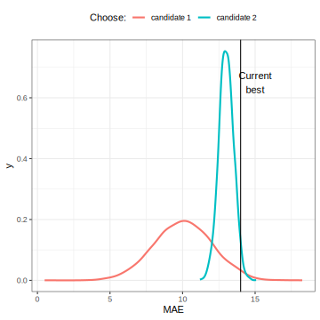

library(tidymodels)
#> ── Attaching packages ──────────────────────────── tidymodels 1.2.0 ──
#> ✔ broom 1.0.6 ✔ rsample 1.2.1.9000
#> ✔ dials 1.2.1 ✔ tibble 3.2.1
#> ✔ infer 1.0.7 ✔ tidyr 1.3.1
#> ✔ modeldata 1.4.0 ✔ workflows 1.1.4
#> ✔ parsnip 1.2.1 ✔ workflowsets 1.1.0
#> ✔ purrr 1.0.2 ✔ yardstick 1.3.1
#> ── Conflicts ─────────────────────────────── tidymodels_conflicts() ──
#> ✖ purrr::discard() masks scales::discard()
#> ✖ dplyr::filter() masks stats::filter()
#> ✖ dplyr::lag() masks stats::lag()
#> ✖ recipes::step() masks stats::step()
#> • Learn how to get started at https://www.tidymodels.org/start/
library(textrecipes)
library(bonsai)
# Max's usual settings:
tidymodels_prefer()
theme_set(theme_bw())
options(
pillar.advice = FALSE,
pillar.min_title_chars = Inf
)4 - Iterative Search
Advanced tidymodels
Previously - Setup
data(hotel_rates)
set.seed(295)
hotel_rates <-
hotel_rates %>%
sample_n(5000) %>%
arrange(arrival_date) %>%
select(-arrival_date) %>%
mutate(
company = factor(as.character(company)),
country = factor(as.character(country)),
agent = factor(as.character(agent))
)Previously - Data Usage
set.seed(4028)
hotel_split <- initial_split(hotel_rates, strata = avg_price_per_room)
hotel_train <- training(hotel_split)
hotel_test <- testing(hotel_split)
set.seed(472)
hotel_rs <- vfold_cv(hotel_train, strata = avg_price_per_room)Previously - Boosting Model
hotel_rec <-
recipe(avg_price_per_room ~ ., data = hotel_train) %>%
step_YeoJohnson(lead_time) %>%
step_dummy_hash(agent, num_terms = tune("agent hash")) %>%
step_dummy_hash(company, num_terms = tune("company hash")) %>%
step_zv(all_predictors())
lgbm_spec <-
boost_tree(trees = tune(), learn_rate = tune(), min_n = tune()) %>%
set_mode("regression") %>%
set_engine("lightgbm", num_threads = 1)
lgbm_wflow <- workflow(hotel_rec, lgbm_spec)
lgbm_param <-
lgbm_wflow %>%
extract_parameter_set_dials() %>%
update(`agent hash` = num_hash(c(3, 8)),
`company hash` = num_hash(c(3, 8)))Iterative Search
Instead of pre-defining a grid of candidate points, we can model our current results to predict what the next candidate point should be.
Suppose that we are only tuning the learning rate in our boosted tree.
We could do something like:
mae_pred <- lm(mae ~ learn_rate, data = resample_results)and use this to predict and rank new learning rate candidates.
Iterative Search
A linear model probably isn’t the best choice though (more in a minute).
To illustrate the process, we resampled a large grid of learning rate values for our data to show what the relationship is between MAE and learning rate.
Now suppose that we used a grid of three points in the parameter range for learning rate…
A Large Grid

A Three Point Grid

Gaussian Processes and Optimization
We can make a “meta-model” with a small set of historical performance results.
Gaussian Processes (GP) models are a good choice to model performance.
- It is a Bayesian model so we are using Bayesian Optimization (BO).
- For regression, we can assume that our data are multivariate normal.
- We also define a covariance function for the variance relationship between data points. A common one is:
\[\operatorname{cov}(\boldsymbol{x}_i, \boldsymbol{x}_j) = \exp\left(-\frac{1}{2}|\boldsymbol{x}_i - \boldsymbol{x}_j|^2\right) + \sigma^2_{ij}\]
GPs are good because
- they are flexible regression models (in the sense that splines are flexible).
- we need to get mean and variance predictions (and they are Bayesian)
- their variability is based on spatial distances.
Some people use random forests (with conformal variance estimates) or other methods but GPs are most popular.
Predicting Candidates
The GP model can take candidate tuning parameter combinations as inputs and make predictions for performance (e.g. MAE)
- The mean performance
- The variance of performance
The variance is mostly driven by spatial variability (the previous equation).
The predicted variance is zero at locations of actual data points and becomes very high when far away from any observed data.
Your turn
Your GP makes predictions on two new candidate tuning parameters.
We want to minimize MAE.
Which should we choose?

03:00
GP Fit (ribbon is mean +/- 1SD)

Choosing New Candidates
This isn’t a very good fit but we can still use it.
How can we use the outputs to choose the next point to measure?
Acquisition functions take the predicted mean and variance and use them to balance:
- exploration: new candidates should explore new areas.
- exploitation: new candidates must stay near existing values.
Exploration focuses on the variance, exploitation is about the mean.
Acquisition Functions
We’ll use an acquisition function to select a new candidate.
The most popular method appears to be expected improvement (EI) above the current best results.
- Zero at existing data points.
- The expected improvement is integrated over all possible improvement (“expected” in the probability sense).
We would probably pick the point with the largest EI as the next point.
(There are other functions beyond EI.)
Expected Improvement

Iteration
Once we pick the candidate point, we measure performance for it (e.g. resampling).
Another GP is fit, EI is recomputed, and so on.
We stop when we have completed the allowed number of iterations or if we don’t see any improvement after a pre-set number of attempts.
GP Fit with four points

Expected Improvement

GP Evolution

Expected Improvement Evolution

BO in tidymodels
We’ll use a function called tune_bayes() that has very similar syntax to tune_grid().
It has an additional initial argument for the initial set of performance estimates and parameter combinations for the GP model.
Initial grid points
initial can be the results of another tune_*() function or an integer (in which case tune_grid() is used under to hood to make such an initial set of results).
We’ll run the optimization more than once, so let’s make an initial grid of results to serve as the substrate for the BO.
I suggest at least the number of tuning parameters plus two as the initial grid for BO.
An Initial Grid
reg_metrics <- metric_set(mae, rsq)
set.seed(12)
init_res <-
lgbm_wflow %>%
tune_grid(
resamples = hotel_rs,
grid = nrow(lgbm_param) + 2,
param_info = lgbm_param,
metrics = reg_metrics
)
show_best(init_res, metric = "mae")
#> # A tibble: 5 × 11
#> trees min_n learn_rate `agent hash` `company hash` .metric .estimator mean n std_err .config
#> <int> <int> <dbl> <int> <int> <chr> <chr> <dbl> <int> <dbl> <chr>
#> 1 390 10 0.0139 13 62 mae standard 11.3 10 0.202 Preprocessor1_Model1
#> 2 718 31 0.00112 72 25 mae standard 29.0 10 0.335 Preprocessor4_Model1
#> 3 1236 22 0.0000261 11 17 mae standard 51.8 10 0.416 Preprocessor7_Model1
#> 4 1044 25 0.00000832 34 12 mae standard 52.8 10 0.424 Preprocessor5_Model1
#> 5 1599 7 0.0000000402 254 179 mae standard 53.2 10 0.427 Preprocessor6_Model1BO using tidymodels
set.seed(15)
lgbm_bayes_res <-
lgbm_wflow %>%
tune_bayes(
resamples = hotel_rs,
initial = init_res, # <- initial results
iter = 20,
param_info = lgbm_param,
metrics = reg_metrics
)
#> ! No improvement for 10 iterations; returning current results.
show_best(lgbm_bayes_res, metric = "mae")
#> # A tibble: 5 × 12
#> trees min_n learn_rate `agent hash` `company hash` .metric .estimator mean n std_err .config .iter
#> <int> <int> <dbl> <int> <int> <chr> <chr> <dbl> <int> <dbl> <chr> <int>
#> 1 1984 2 0.0387 9 20 mae standard 9.58 10 0.152 Iter7 7
#> 2 1948 3 0.0467 11 144 mae standard 9.58 10 0.159 Iter12 12
#> 3 1784 2 0.0402 11 190 mae standard 9.58 10 0.178 Iter16 16
#> 4 1953 9 0.0374 12 10 mae standard 9.62 10 0.208 Iter14 14
#> 5 1504 2 0.0475 13 109 mae standard 9.65 10 0.180 Iter15 15Plotting BO Results
autoplot(lgbm_bayes_res, metric = "mae")
Plotting BO Results
autoplot(lgbm_bayes_res, metric = "mae", type = "parameters")
Plotting BO Results
autoplot(lgbm_bayes_res, metric = "mae", type = "performance")
ENHANCE
autoplot(lgbm_bayes_res, metric = "mae", type = "performance") +
ylim(c(9, 14))
#> Warning: Removed 6 rows containing missing values or values outside the scale
#> range (`geom_point()`).
Your turn
Let’s try a different acquisition function: conf_bound(kappa).
We’ll use the objective argument to set it.
Choose your own kappa value:
- Larger values will explore the space more.
- “Large” values are usually less than one.
10:00
Notes
Stopping
tune_bayes()will return the current results.Parallel processing can still be used to more efficiently measure each candidate point.
There are a lot of other iterative methods that you can use.
The finetune package also has functions for simulated annealing search.
Finalizing the Model
Let’s say that we’ve tried a lot of different models and we like our lightgbm model the most.
What do we do now?
- Finalize the workflow by choosing the values for the tuning parameters.
- Fit the model on the entire training set.
- Verify performance using the test set.
- Document and publish the model(?)
Locking Down the Tuning Parameters
We can take the results of the Bayesian optimization and accept the best results:
best_param <- select_best(lgbm_bayes_res, metric = "mae")
final_wflow <-
lgbm_wflow %>%
finalize_workflow(best_param)
final_wflow
#> ══ Workflow ══════════════════════════════════════════════════════════
#> Preprocessor: Recipe
#> Model: boost_tree()
#>
#> ── Preprocessor ──────────────────────────────────────────────────────
#> 4 Recipe Steps
#>
#> • step_YeoJohnson()
#> • step_dummy_hash()
#> • step_dummy_hash()
#> • step_zv()
#>
#> ── Model ─────────────────────────────────────────────────────────────
#> Boosted Tree Model Specification (regression)
#>
#> Main Arguments:
#> trees = 1984
#> min_n = 2
#> learn_rate = 0.0386760025079899
#>
#> Engine-Specific Arguments:
#> num_threads = 1
#>
#> Computational engine: lightgbmThe Final Fit
We can use individual functions:
final_fit <- final_wflow %>% fit(data = hotel_train)
# then predict() or augment()
# then compute metricsRemember that there is also a convenience function to do all of this:
set.seed(3893)
final_res <- final_wflow %>% last_fit(hotel_split, metrics = reg_metrics)
final_res
#> # Resampling results
#> # Manual resampling
#> # A tibble: 1 × 6
#> splits id .metrics .notes .predictions .workflow
#> <list> <chr> <list> <list> <list> <list>
#> 1 <split [3749/1251]> train/test split <tibble [2 × 4]> <tibble [0 × 3]> <tibble [1,251 × 4]> <workflow>Test Set Results
final_res %>%
collect_predictions() %>%
cal_plot_regression(
truth = avg_price_per_room,
estimate = .pred)Test set performance:
final_res %>% collect_metrics()
#> # A tibble: 2 × 4
#> .metric .estimator .estimate .config
#> <chr> <chr> <dbl> <chr>
#> 1 mae standard 9.81 Preprocessor1_Model1
#> 2 rsq standard 0.945 Preprocessor1_Model1